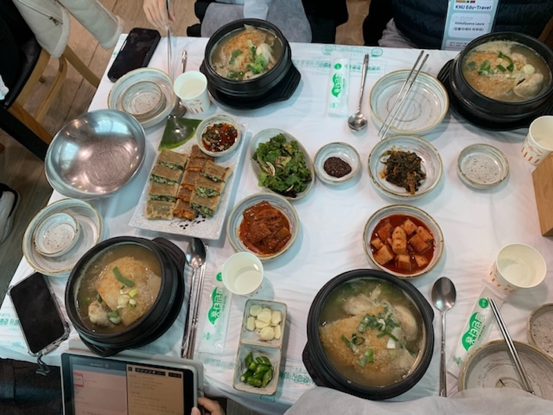
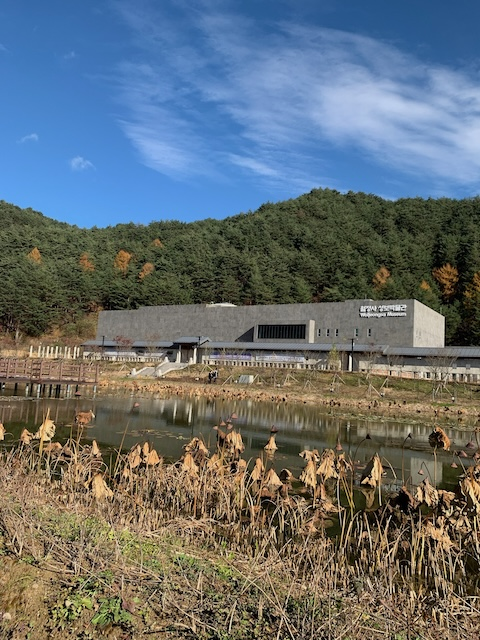
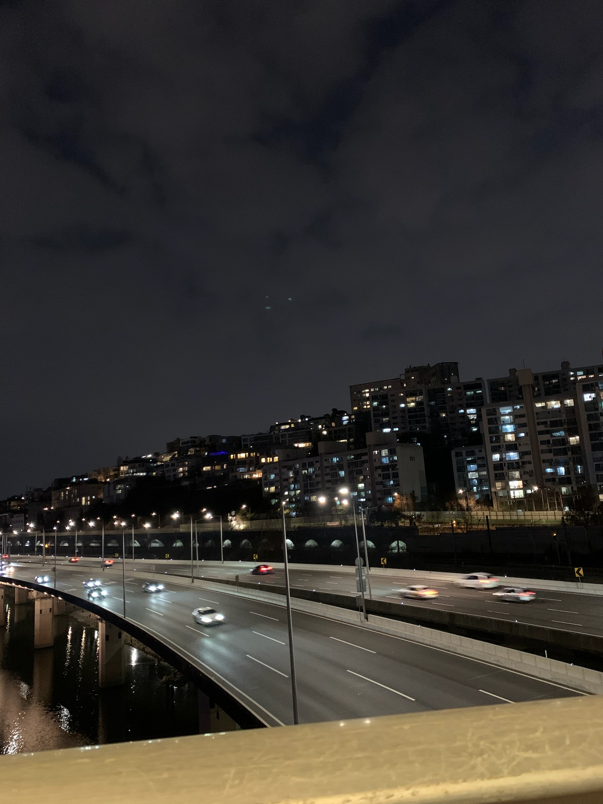

This dish lasted less than 4 minutes. Was so good!!
Time paused here. Even my thoughts slowed down.
Felt small. Then felt infinite.
Cute. Chaotic energy. Mutual side-eye.
Took one photo. Felt like I captured the whole vibe.
Went for a walk. Stayed for the sky.
Didn't plan this stop. Might be my favorite.

No one around. Just me and the air standing still.
Sights, sounds, smells—five senses on full blast.
Sat longer than expected. Left lighter.
Didn't sleep. Watched clouds and memories roll by.
Took this picture mainly bcs I didn't think I had taken enough.
So many picture worthy places in South Korea!.
Only went outside for a bit for pictures,sooo cold!! .

1 am walks, so worth it!!.
Sat by the river for a while, it was calming. very enjoyable.
Yes, more pictures of lookouts. No shame.